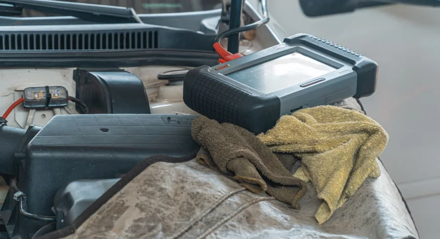
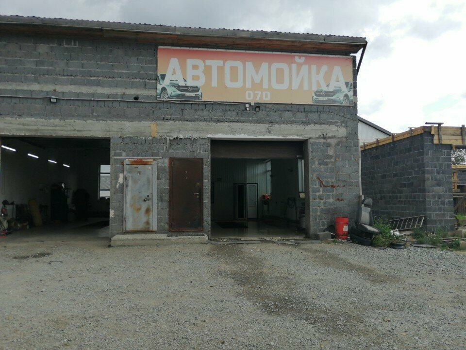
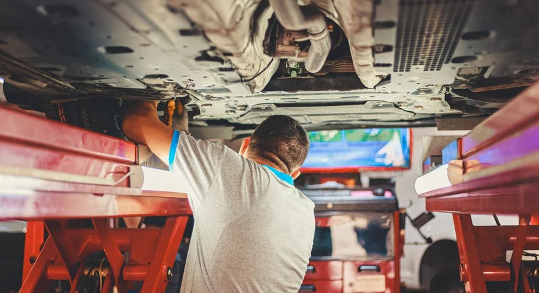
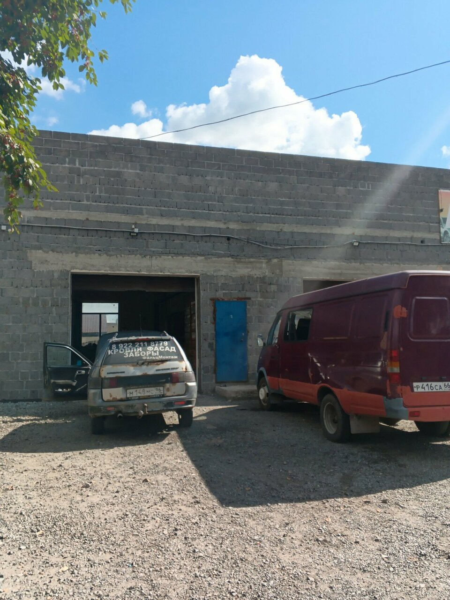
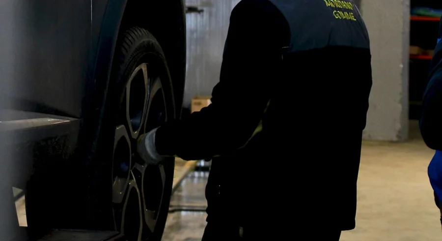

Автосервис 070
Ремонт, шиномонтаж и автомойка
Нижний Тагил, Кушвинская ул., 30
Ежедневно, 09:00–21:00

При записи назовите марку автомобиля
Услуги


Замена масла
При записи уточните марку двигателя и какое масло потребуется.

